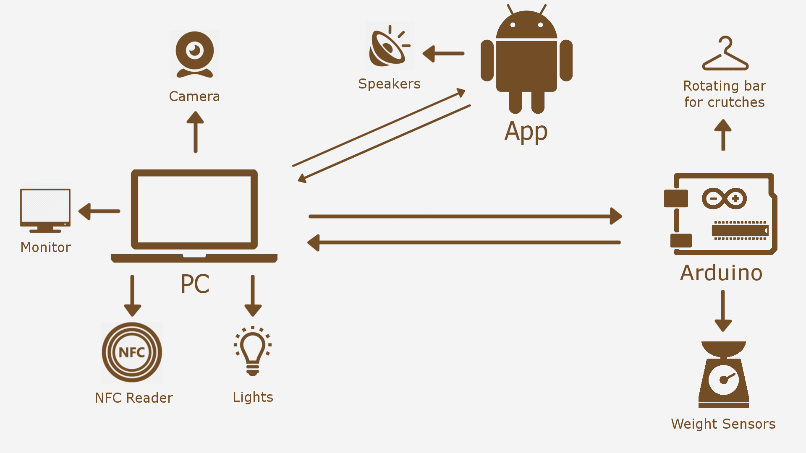

Lucy is a smart walk-in closet that can help you to get ready in the best way. Let our smart mirror be the interface to a brand new way of getting ready. Say goodbye to the endless search for that dress you want wear; Lucy will remember where
you put it and show you where it is, tracking what dresses are currently available in your wardrobe. You can use your phone or even the mirror to search through the database of your dresses. Are you unsure about your outfit? Lucy can suggest
you the right one based on the weather or the type of the event you are going to.
It also controls the lights and the music in the room, so that you get in the right mood for the event! The more you use it, the more it will learn from you! When you’re dressed, let Lucy take a picture of yourself so it can refine his suggestions!
Lucy is designed for everyone who’s spending a lot of time unsure of how to dress. Even if you are the kind of person who chooses outfits without checking the weather, Lucy is for you.
You don't know how to dress for an event you are going to. You are going to waste hours trying as many outfits as you can, to find one you like. What if there was a simple solution to this?
Simply ask Lucy how you should dress. It can understand not only weather conditions, but also the type of the event, so you'll never be wrong. Meanwhile, watch the light getting brighter and the enjoy the music pumping out.
Choose one of the outfits Lucy is suggesting you or a new one, and watch the wardrobe open and show you where it is. Let Lucy take a picture of you before you go, so it can suggest you that outfit the next time.
When you get home, rate Lucy's suggestion, so it can refine its accuracy and will improve.
Through a camera on the mirror, Lucy can recognize your face and track your movements; this enables a unique interaction for every user. Moreover, Lucy gathers data about weather and your calendar to give you the best possible suggestions. Weight sensors in your wardrobe and NFC readers will understand where you put your dresses.
Lucy analyses data to remember you where you put your dresses or to suggest the best outfit for a certain event. The data are used according to previous interactions, so that the system can learn from the user and from the context.
Lucy recognizes faces and hand gestures. It also displays on-screen informations on the smart mirror, which is the main interface to the system. Interact with the wardrobe to let Lucy remember where you are putting your dresses.
Lights and music will be controlled by Lucy to ensure you have the best possible experience. Whenever you select an outfit, lights in the wardrobe will show you where it is; if it's on a crutch, Lucy will even bring it closer to you.
Lucy can recognize you by your face, allowing you to have a unique experience. Several informations are gathered through internet so that Lucy's suggestions are always on point. It can detect if you pick a dress from the closet by simply scanning the dress' NFC label. On the other hand, when you put it back, it understands wheter the dress was hanged on a crutch or put on a shelf, using weight sensors.
Get different suggestions based on the person, weather, event type and preferences, so the suggestion will always be perfect for the context you are in.
Lucy is extremely intelligent. Through machine learning, hand gesture control and face recognition it will grant a really smooth experience. Also thanks to its context awareness, it will learn from your preferences.
Lights and music will always be appropriate, letting you choose your dress in the perfect atmosphere. The smart wardrobe will help you find your dress when you choose one thanks to a rotating crutchbar.
Lucy it's a walk-in closet, after all. You won't see any kind of strange IT device in your house.
Lucy tackles the problem of getting ready in the best possible way by providing several services as creative outfit suggestions according to the proper context. The system is not meant to force users' decisions, it will rather ask for guidance
instead, ensuring personal taste and the overall experience are privileged over raw logic.

The web server is the central computational node; it runs on the RaspberryPi. It is composed by five main software modules:
Database: Manages connections to the database for local calendar, user profiles, pictures and outfit history
Logic: Algorithms to suggest, choose and review outfits.
User Interface: Provides ways for the user to interact with the system in the form of voice control, mobile application and face recognition.
Hardware Interface: Manages communications between the server and other hardware components such as Arduino, lights and NFC reader.
APIs Handler: Gets needed informations by calling several external services like Google Calendar, Spotify, Weather provider. Offers RESTful APIs for the web server to be called by a web app.
Displays the system operations and results to the user, providing a graphic interface to the system. It runs on the PC and calls the web server APIs.
User interface: replicates the web application features and helps adding a new dress, in addition it is used as an alternative input method.
Spotify: Remote controls Spotify and automatically suggest/plays appropriate playlists while getting ready for an event
Calendar: connects to Google Calendar providing events sync for each user
Controls weight sensors and the rotating bar for crutches, communicating with the web server. It runs on Arduino and communicates with the PC.
PC: Data elaboration and web server hosting. Manages camera, room lights, wardrobe lights, and Arduino.
Arduino: It controls the rotating bar for crutches and manages weight sensors.
Camera: takes pictures for face recognition and to memorize dresses into the database. Recognizes gestures for user interaction. It’s placed on top of the mirror.
Microphone: providing voice control for user interaction. It’s placed behind the mirror.
NFC reader: scans NFC tags to register when a dress is taken in or out the wardrobe. It’s placed on the wardrobe.
Room lights: they lighten up the room, being set brighter when dressing up. They are on the ceiling.
Wardrobe lights: one for each sector of the wardrobe, they light up to show where the requested dress is. They are in the wardrobe.
Rotating bar for crutches: it is a bar for crutches divided into sectors. It can rotate to show one or the other based on where a requested dress is or where there is available space. It’s placed into the wardrobe.
Weight sensors: used to sense where a dress is put inside the wardrobe. They are placed under every shelf of the wardrobe.
Speakers: Playing music. They are placed around the mirror.
NFC reader (as Android application): scans NFC tags to register when a dress is taken in or out the wardrobe. It’s placed on the wardrobe.
Monitor: shows the informations and allows the system to communicate with the user. It’s placed behind a two-way mirror.